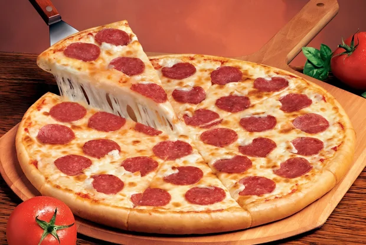

Pizza pepperony

Описание
Энергетическая ценность на порцию
- Калорийность - 865 ккал
- Белки - 37 грамм
- Жиры - 51 грамм
- Углеводы - 71 грамм
Ингредиенты
- Тесто для пиццы - 1 штука
- Сыр моцарелла - 250 г
- Оливковое масло - 2 столовые ложки
- Сырокопченая колбаса - 200 г
- Перец чили - 1 штука
- Помидоры в собственном соку - 1 банка
- Орегано - 1 чайная ложка
- Сушеный базилик - 1 чайная ложка
- Чеснок - 1 зубчик
- Сахар - 1 чайная ложка
- Соль - по вкусу
- Молотый черный перец - по вкусу
Пошаговый рецепт
- Сначала сделай соус: смешай томаты со специями, измельчённым чесноком,
сахаром, солью и перцем.
- Доведи до кипения и остуди.
- Раскатай тесто, смажь его оливковым маслом и соусом.
- Посыпь половиной сыра, выложи колбасу и тонко нарезанный чили.
- Сверху - оставшийся сыр.
- Готовь в духовке 10-12 минут при 220 градусах.
- Пицца готова.
Home